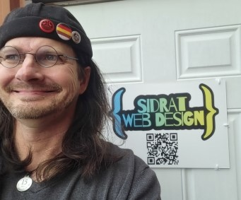

I am an Indie Game Developer
At the beginning of 2021, I started Sid Rat Games. That is actually how I started in coding. After some time I realized that while building my game I was actually coding in Python. I am well versed in Python. I’d say it is my language of choice. Beyond that I work with HTML5, CSS+, and JavaScript. I have used both the GitHub, and WordPress platforms to publish websites. I possess an old school work ethic and take pride in things I create. If given the opportunity I will not quit at my task(s) until they are completed to perfection.

As a child, one of my favorite toys was a six wheel “computer car”. There were arrow buttons on top of it. The play was to enter directions and time travel then go. In hindsight I was doing basic programming as a toddler, writing and executing a basic code. That was my favorite toy for years. To be honest, I wasn’t the best student in High School. However, computer class was my jam. At the time we were taught DOS. The strict method of writing the code was exactly what my mind needed.
I have a deeply instilled passion for coding. That is why I took an Eleven Fifty boot camp, and will be continuing to learn new languages as they emerge.